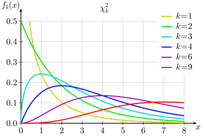

The chi-square test is a nonparametric test for testing the association between two variables. A non-parametric test is one that does not make any assumption about the distribution of the population from which the sample is drawn.
The following are some of the characteristics of the chi-square test. + The chi-square test of association is used to test if the frequency of occurrence of one categorical variable is significantly associated with that of another categorical variable.
The chi-square test statistic is given by:
$$\chi^2 = \sum\frac {(f_o -f_e)^2}{f_e}$$
where, $f_o$ denotes the observed frequencies, $f_e$ denotes the expected frequencies, and $\chi$ is the test statistic.
Using the chi-square test of association, we can assess if the differences between the frequencies are statistically significant.
A contingency table is a table with frequencies of the variable listed under separate columns. The formula for the degrees of freedom in the chi-square test is given by: df=(r-1)(c-1), where df is the number of degrees of freedom, r is the number of rows in the contingency table, and c is the number of columns in the contingency table.
The chi-square test compares the observed values of a set of variables with their expected values. It determines if the differences between the observed values and expected values are due to random chance (like a sampling error), or if these differences are statistically significant. If there are only small differences between the observed and expected values, it may be due to an error in sampling. If there are substantial differences between the two, it may indicate an association between the variables.

The shape of the chi-square distribution for different values of k (degrees of freedom) When the degrees of freedom are few, it looks like an F-distribution. It has only one tail (toward the right). As the degrees of freedom increase, it looks like a normal curve. Also, the increase in the degrees of freedom indicates that the difference between the observed values and expected values could be meaningful and not just due to a sampling error.
Example:
Suppose there is a city of 1,000,000 residents with four neighborhoods: A, B, C, and D. A random sample of 650 residents of the city is taken and their occupation is recorded as “white collar”, “blue collar”, or “no collar”. The null hypothesis is that each person’s neighborhood of residence is independent of the person’s occupational classification. The data are tabulated as:
OBSERVED
A
B
C
D
Row Total
White Collar
90
60
104
95
349
Blue Collar
30
50
51
20
151
No Collar
30
40
45
35
150
Column Total
150
150
200
150
650
Null hypothesis:\(H_0\): Occupation and Neighbourhood of Residence are not related.
Alternative hypothesis: \(H_1\): Occupation and Neighbourhood of Residence are related.
Number of variables: Two categorical variables (Occupation and Neighbourhood)
What we are testing: Testing for an association between Occupation and Neighbourhood.
We conduct a chi-square test of association based on the preceding characteristics.
Fix the level of significance: α=0.05
Make an expected value table from the totals
For each entry calcuate : \[\frac{(row\ total * column\ total)}{overall\ total}\]
Example: For A neighbourhood 150 * (349/650) must be the expected White collar Job.
EXPECTED
A
B
C
D
White Collar
80.54
80.54
107.38
80.54
Blue Collar
34.85
34.85
46.46
34.85
No Collar
34.62
34.62
46.15
34.62
Each of the value in the Expected Value table is 5 or higher. May proceed with Chi-Square test.
p-value turns to be 0.0004 < 0.05. Therefore we reject the null hypothesis. There is a significant association between the Occupation and Neighbourhood of Residence, at a 5% significance level.
Chi-Square Goodness of Fit Test:
A Chi-Square goodness of fit test can be used in a wide variety of settings. Here are a few examples:
We want to know if a die is fair, so we roll it 50 times and record the number of times it lands on each number.
We want to know if an equal number of people come into a shop each day of the week, so we count the number of people who come in each day during a random week.
It is performed in a similar way.
A shop owner claims that an equal number of customers come into his shop each weekday. To test this hypothesis, an independent researcher records the number of customers that come into the shop on a given week and finds the following:
Day
Customers
Monday
50
Tuesday
60
Wednesday
40
Thursday
47
Friday
53
\(H_0\): An equal number of customers come into the shop each day. \(H_1\): An equal number of customers do not come into the shop each day.
There were a total of 250 customers that came into the shop during the week. Thus, if we expected an equal amount to come in each day then the expected value \(E\) for each day would be 50.
the p-value associated with \(\chi^2\) = 4.36 and degrees of freedom n-1 = 5-1 = 4 is 0.359472.
Since this p-value is not less than 0.05, we fail to reject the null hypothesis. This means we do not have sufficient evidence to say that the true distribution of customers is different from the distribution that the shop owner claimed.